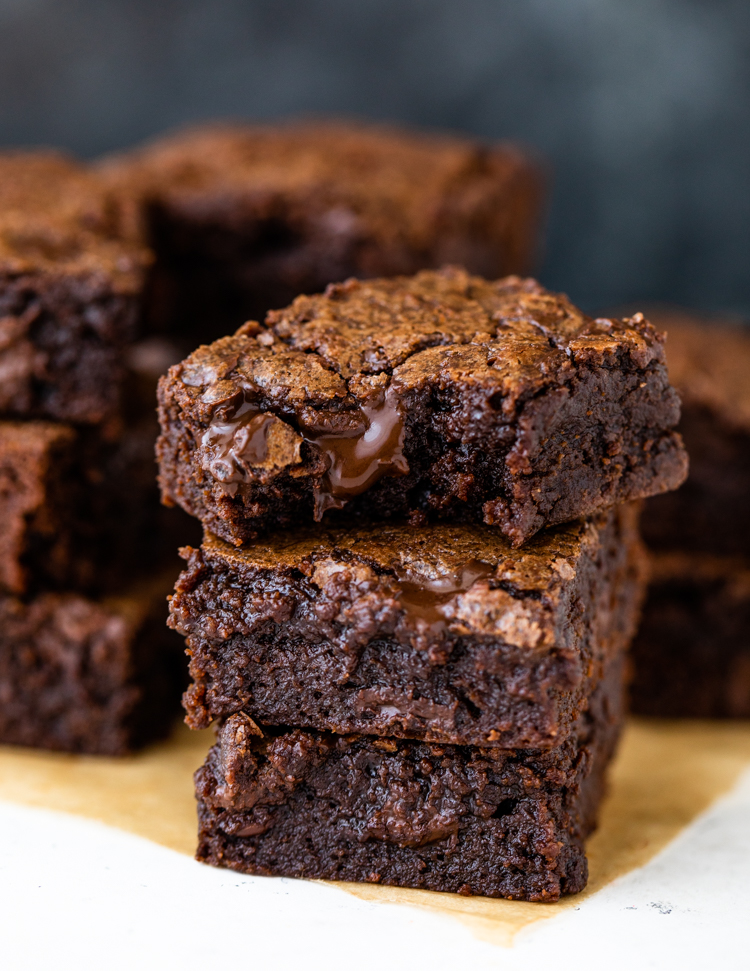

Fudgy Cocoa Brownies
Source:
Easy One Bowl Fudgy Cocoa Brownies
Author: Layla @ GimmieDelicious

These brownies are fudgy, dense, rich, and super chocolately! With simply a few basic ingredients and 30 minutes of your time,
you’ve got yourself a batch of brownies that is out of this world!
Ingredients
- 1/2 cup all-purpose flour
- 1/4 teaspoon salt
- 1 cup granulated sugar
- 1/2 cup unsweetened cocoa
- 1/2 cup melted unsalted butter (at room temperature)
- 1 teaspoon vanilla extract
- 2 large eggs
- 1/2 cup chocolate chips(optional; any kind)
Instructions
- Preheat oven to 350°F. Grease an 8x8 square pan or line with foil and set aside.
- In a medium bowl combine melted butter and cocoa and sugar stir until fully dissolved.
- Add eggs one at a time then vanilla and stir until well combined.
- Stir in flour and salt until the flour is fully combine. Be careful not to overmix mix.
- (Optional) Fold in 1 cup of nuts, raisins, chocolate chips or anything you desire.
- Spread in pan and bake for approximately 20-22 minutes or until the center is slightly set. Be careful not to over-bake!
- Cool completely then cut into 9 large squares or 16 small squares.